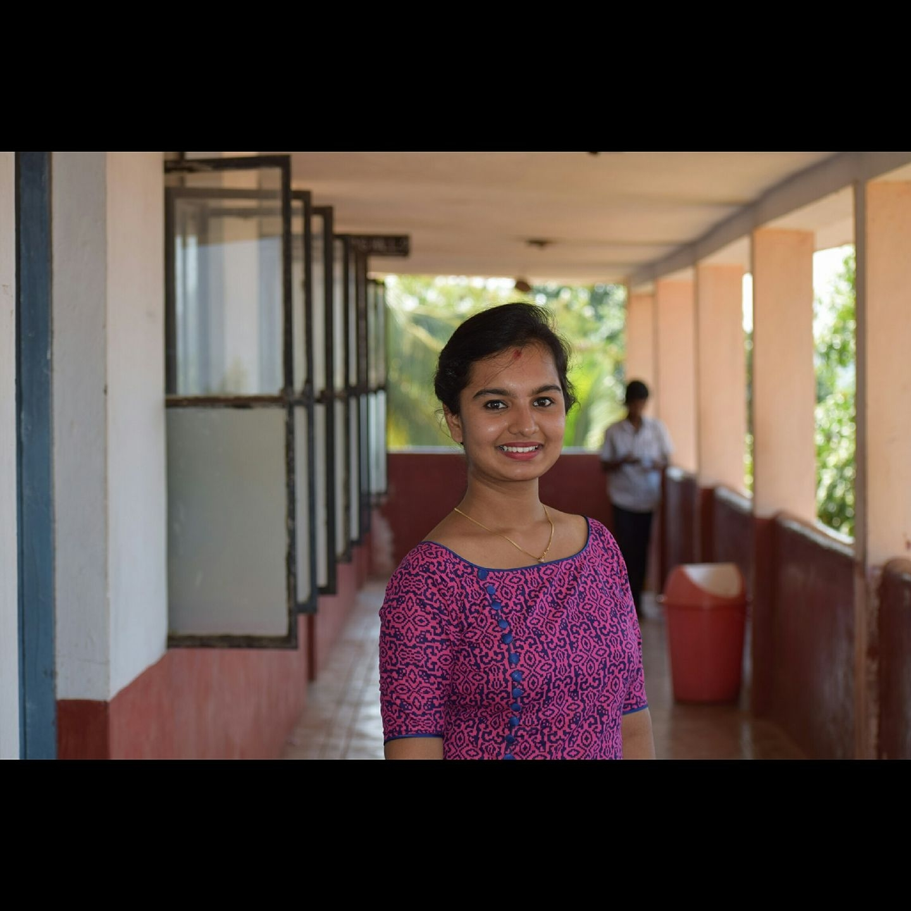
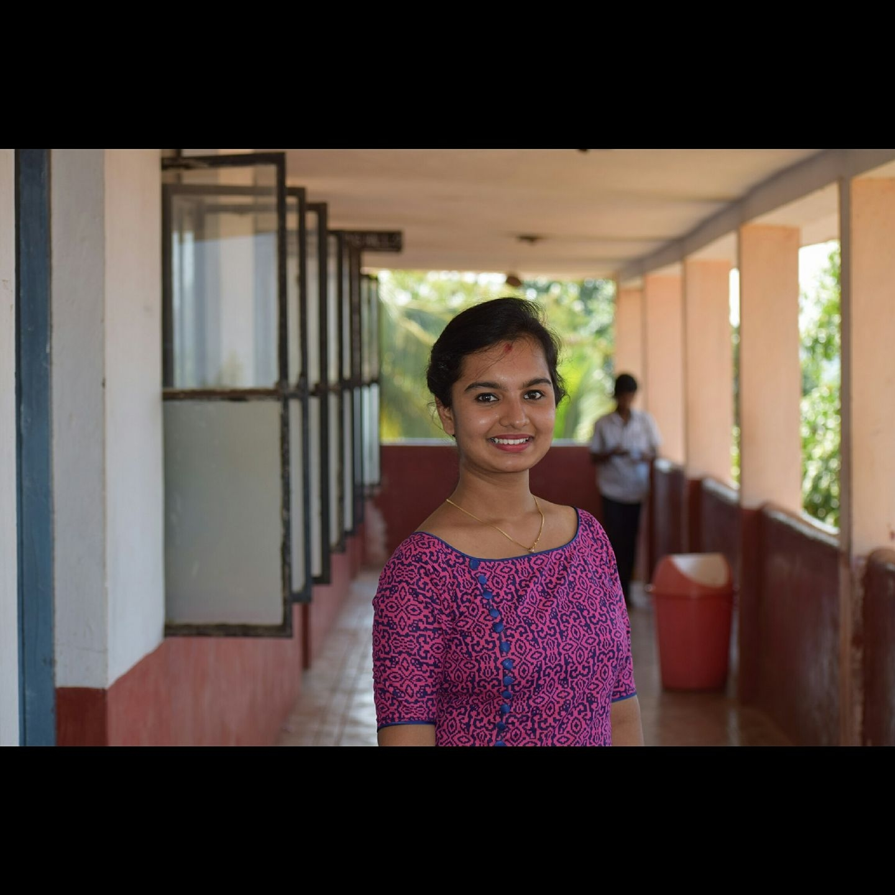

Graduate
Rotational
Internship
Program
The Graduate Rotational Internship Program is an unique offer for students and recent graduates to experience and join The Sparks Foundation. In addition to learning skills specific tasks, we encourage interns to build a credible professional profile as well.
Register Now
 
Joined by 1,50,000+ students

Joined by 1,50,000+ students